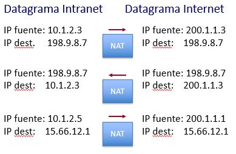
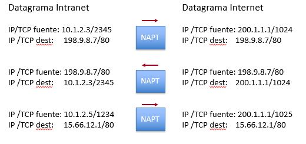
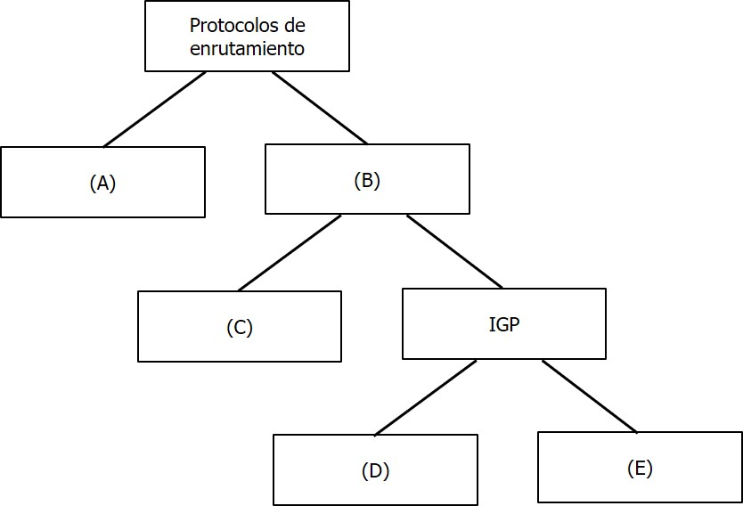

Capítulo 5 Capa de Red
5.1 Introducción
Como se ha mencionado al introducir el modelo de capas ISO/OSI, la función principal de la capa de red es encontrar una trayectoria por la cual se encaminarán los paquetes desde la fuente hasta su destino.
A partir de este capítulo nos enfocaremos exclusivamente en las capas y protocolos del Modelo TCP/IP. En este modelo, la capa de red es, precisamente, la capa IP (Internet Protocol). En esta capa, a las unidades de información intercambiadas se les llama paquetes o datagramas. En el presente capítulo conoceremos el formato de los datagramas IPv4 e IPv6, así como algunos protocolos auxiliares como ICMP y ARP. También conoceremos los fundamentos para asignar direcciones a nuestras redes, subredes y equipos terminales.
Finalmente, se presentarán distintos protocolos de enrutamiento, que son los que permiten encaminar o enrutar los paquetes desde la fuente hasta su destino.
5.2 Protocolo IP
El éxito de Internet se explica en gran medida por determinadas decisiones fundamentales con las que fue diseñada (Saltzer, et al., 1984). Su objetivo primordial es interconectar redes heterogéneas entre sí (de ahí su nombre) de manera sencilla. Para ello, todos los dispositivos conectados deben “hablar” y “entender” un “lenguaje” común: el protocolo IP.
El protocolo IP recibe información de la capa superior (la capa de transporte) y crea un datagrama que viaja por la red hasta su destino. Cuenta con un mecanismo sencillo para detectar errores en el encabezado. No verifica la integridad de la información pues esta función ya se realiza en capa de transporte (como se verá en el siguiente capítulo) o en la capa de enlace de datos.
Existen dos versiones del protocolo IP: IPv4 e IPv6. En esta sección se presenta el protocolo IPv4. Mostraremos la operación de este protocolo a partir de la descripción de los campos que conforman el datagrama IP, el cual se presenta en la figura 5.1.
Figura 5.1: Formato del datagrama IPv4
Versión. El primer campo, de cuatro bits, contiene la versión del datagrama. Sólo son válidos dos números: 0100 (versión 4) y 0110 (Versión 6). Hasta hoy,
IHL. Internet Header Length. Dado que los datagramas IPv4 pueden contener opciones, la longitud del encabezado puede variar. Este campo contiene la longitud en múltiplos de 4 bytes (o en palabras de 32 bits). En realidad, es muy raro encontrar datagramas IP con opciones, por lo que este campo casi siempre contendrá el valor ‘5’, que corresponde a 20 bytes, la longitud del encabezado sin opciones.
DSCP. DiffServ Code Point Anteriormente este campo se conocía como Tipo de Servicio y tenía por intención permitir que el usuario pudiera indicar su preferencia por algún tipo de red en particular: baja latencia, alto caudal, servicio confiable o bajo costo. En la práctica, la preferencia casi nunca se especificaba y no se podía garantizar el servicio a lo largo de toda la internet. Lo que es peor, podía introducir lazos indeseables en el encaminamiento de paquetes. En la actualidad, este byte permite ofrecer “servicios diferenciados” cuando se implementa una red con distintas calidades de servicio.
Longitud total. Indica la longitud total del datagrama. Dado que este campo es de 16 bits, la longitud total es de 64 kBytes (\(2^{16}\)).
Identificación, Banderas y Offset del fragmento. Si bien el datagrama puede tener una longitud de hasta 64 kBytes, la realidad es que la mayoría de las redes pueden transportar paquetes de mucho menor tamaño. Por ejemplo, en el capítulo anterior se ha señalado que el tamaño máximo de una trama es de 1,500 bytes. En estos casos, el datagrama debe fragmentarse y los fragmentos viajan separados por la red hasta el destino, en el que se reunifican para formar el datagrama original. El datagrama original tiene un Identificador de 32 bits que se copia en todos los fragmentos. Todos los fragmentos, excepto el último, tienen la bandera “M” (More fragments) activado. La posición del fragmento en el datagrama original está indicada por el campo Offset del fragmento (en realidad es el valor indicado, multiplicado por 8). Como este proceso de fragmentación y rensamblado es muy costoso, si la bandera “D” (Don’t fragment) está encendida, significa que se prefiere descartar el datagrama que fragmentarlo.
Tiempo de vida. Indica el número máximo de “saltos” que puede tomar un datagrama antes de ser descartado. El valor actual de default es de 32. Cada vez que el paquete llega a un enrutador, este valor se decrementa en uno. Si llega a cero, el enrutador lo descarta y, opcionalmente, envía un mensaje indicando que el destinatario “fue inalcanzable”. Esta es una forma sencilla de eliminar datagramas que, por ejemplo, tienen algún error en su dirección destino y que podrían estar viajando por la red de manera indefinida Como se verá más adelante, cuando un enrutador no conoce la trayectoria para acercar el datagrama a su destino, suele enviarlo a una “ruta por omisión”. Si todos los enrutadores tienen una ruta por omisión, el paquete estaría viajando indefinidamente por la red.
Protocolo. Indica el protocolo superior (o de la capa de red) al cual se le debe de entregar la información que transporta el datagrama. La lista de protocolos está especificada en el RFC 1700.
Checksum. Se calcula como el complemento a 1 de la suma de 16 bits de los campos del encabezado. Aunque débil, es un mecanismo que no requiere de mucho procesamiento, lo cual es importante porque cada enrutador lo debe calcular. Se asume que la información está protegida con algoritmos más robustos en la capa 4 y, como se ha mostrado, en la capa 2.
Dirección fuente y destino. Indican el número de red y el número de nodo para el emisor y receptor del paquete, respectivamente. En la siguiente sección se presentan las direcciones IP detalladamente.
Opciones. Inician con un byte que identifica el código de la opción. Se han especificado opciones para seguridad, enrutamiento estricto, registro de rutas y sellos de tiempo, entre otros. La realidad es que las opciones prácticamente nunca se utilizan (de hecho, fueron descartadas en la especificación de IPv6) y no serán cubiertas en estas notas.
Padding. El encabezado de IP debe ser un múltiplo de 4 bytes (palabras de 32 bits). Si se incluye una opción que no sea múltiplo de 4 bytes, en este campo se añade un “relleno” para alinearla a esa longitud.
5.3 Esquema de direccionamiento
Para comunicarse, cada dispositivo necesita de un identificador único18 llamado la dirección IP. Para entender el formato de las direcciones IP, un concepto esencial que debe quedar muy claro, es que “Internet” es una * Interconexión de Networks *. Por ello, las direcciones IP están formadas por dos partes: un identificador de red y un identificador de host o dispositivo (en realidad, un identificador de la tarjeta de red del dispositivo).
Como se observa en la figura 5.1, cada datagrama contiene la dirección del destinatario. Los nodos de conmutación en la red, llamados enrutadores en esta capa, revisan la parte de red de la dirección IP y deciden a qué enrutador vecino entregarle el datagrama para acercarlo a la red donde se encuentra el destinatario. Una vez alcanzada la red destino, se analiza la parte de host de la dirección IP para entregarla al dispositivo correspondiente.
En IPv4, las direcciones IP son de 32 bits y, para simplificar su interpretación por las personas, son divididas en cuatro bytes, cada uno expresado en formato decimal y separado por un punto. Por ejemplo, la computadora que hospeda el servidor Web del ITAM, tiene la dirección IP 148.205.148.6, lo cual es mucho más sencillo de asimilar, que su equivalente en binario: 10010100 11001101 10010100 0000110.
5.3.1 Clases de direcciones IP
Cada red conectada a Internet debe tener su propia dirección (su identificador único) y los enrutadores debían contar con un mecanismo sencillo para poder obtener ese identificador de la dirección IP y, con base en él, encaminar el datagrama hacia la red donde se encuentra el destinatario.
Para ello, los diseñadores de Internet decidieron definir cinco distintos tipos de redes que se pueden distinguir a partir de los bits más significativos de la dirección IP.
Clase A
Si el bit más significativo de la dirección IP empieza en cero, tenemos una direción clase A y el primer byte de la dirección IP es el identificador de la red. Los tres bytes restantes quedan disponibles para identificadores de hosts en esa red.
Con siete bits (recordemos que el primer bit ya se ocupó, debe ser cero), tenemos \(2^7=128\) identificadores de red clase A. En realidad, 126, pues los identificadores 0 y 127 están reservados.
Cada una de estas redes dispone de \(2^{24}-2=16,777,214\) identificadores de host. Se han reducido dos direcciones pues cuando todos los bits de la parte de host están en cero, tenemos el identificador de la red y cuando todos están en uno, tenemos una dirección de difusión dentro de esa red.
Esta clase fue propuesta para muy pocas grandes organizaciones con una gran cantidad de hosts, como puede ser un organismo de gobierno o un proveedor de acceso a Internet.
Clase B
Si el bit más significativo de la dirección IP empieza en uno y el siguiente en cero, tenemos una direción clase B y los dos primeros bytes son el identificador de la red. Los dos bytes restantes quedan disponibles para identificadores de hosts en esa red.
Con 14 bits (los primeros dos valen 10), tenemos \(2^{14}=16,384\) identificadores de red clase B. Cada una de estas redes dispone de \(2^{16}-2=64,534\) identificadores de host.
Esta clase fue propuesta para organizaciones de tamaño medio y grande que pudieran tener unos miles de computadoras conectadas a Internet. Observe que sólo hay 16,384 de estas direcciones disponibles en el mundo. El ITAM tiene una de ellas.
Clase C
Si los dos primeros bits más significativos de la dirección IP empiezan en uno y el tercero en cero, tenemos una direción clase C y los tres primeros bytes de la dirección IP son el identificador de la red. El byte restante queda disponible para identificadores de hosts en esa red.
Con 21 bits (los 3 primeros valen 110), tenemos \(2^{21}=2,097,152\) identificadores de red clase C. Cada una de estas redes dispone de \(2^{8}-2=254\) identificadores de host.
Esta clase fue propuesta para organizaciones con pocas computadoras con necesidad de conectarse a Internet. Se anticipaba que hubiera unos pocos millones de organizaciones de este tipo. Recordemos que estas decisiones se tomaron hace más 40 años, cuando nadie imaginaba lo que terminó siendo Internet en nuestras vidas.
Clase D
Las direcciones clase D se reconocen porque los primeros cuatro bits más significativos tienen un valor 1110. Con ellas se pueden crear grupos Multicast, en los que el datagrama se entrega a todos los dispositivos que tengan la misma dirección IP multicast. Por ejemplo, en algunos de los protocolos de enrutamiento que se verán más adelante, los enrutadores se configuran con direcciones multicast para que sólo ellos reciban los datagramas con la información que les permita concebir la topología de la red.
Clase E
Si los primeros cuatro bits valen uno, se tiene una dirección clase E. Se trata de un bloque reservado para experimentación y sus direcciones no pueden ser utilizadas en una red operativa.
En la tabla de la figura 5.2 se sintetizan las principales características de las clases de direcciones IP:
Figura 5.2: Clases de direcciones IP
5.3.2 Subredes IP y Enmascaramiento
No es práctico tener un espacio plano de direccionamiento para todos los dispositivos en una red. No tiene mucho sentido enumerar de manera consecutiva a cada uno de los dispositivos pues con toda probabilidad estos dispositivos podrían organizarse en grupos, por ejemplo, con base en su ubicación o su función en la organización, tal como se podrían organizar las VLANs.
Una red IP puede dividirse en pequeñas redes llamadas subredes. Para identificar cada una de las subredes, se toman “prestados” bits del campo de host de la dirección IP. Entonces, en la dirección IP se tiene un campo para identificar la red, un campo para identificar las subredes en esa red y un campo para identificar los dispositivos en cada subred.
Ejemplo 5.1 Supongamos una organización que tiene una dirección de clase B con la que puede asignar direcciones IP a 65,534 dispositivos. Si la organización tiene 12 unidades de negocio, entonces podría definir doce subredes (en realidad, 16) y en cada una de estas subredes podría asignar direcciones para poco más de 4,000 dispositivos.
Dado que se tienen que definir 12 subredes, se deben tomar prestados cuatro bits del campo de host (\(2^3 = 8 < 12 \le 2^4=16\)) y quedan 12 bits para asignar direcciones IP a dispositivos en cada subred.
Las subredes están bajo administración local, por lo que el mundo externo ve a la organización como una sola red sin tener conocimiento detallado de su estructura interna. En cambio, los enrutadores dentro de la organización deben saber a qué subred dirigir el tráfico correspondiente, es decir cuántos bits de la dirección IP contienen la dirección de red y subred. Para ello se utilizan las máscaras de red.
Al igual que las direcciones IP, la máscara de red también tiene una longitud de 32 bits y se expresa como cuatro dígitos decimales. Los bits en 1 en la máscara indican los bits correspondientes en la dirección IP que identifican las direcciones de red y subred (no se hace distinción entre ellas, no es necesario). Los bits en 0 en la máscara, indican los bits correspondientes en la dirección IP que identifican las direcciones de los hosts. Para la red del ejemplo 5.1, la máscara tiene los primeros 20 bits encendidos y su identificador es `255.255.240.0 como se muestra en la figura 5.3.
Figura 5.3: Subredes y máscara de red
5.3.3 Direccionamiento
Para reforzar los conceptos de redes, subredes y máscaras, hagamos un ejercicio de direccionamiento. Considere la red de la figura 5.4 que tiene una dirección clase C 198.62.193.0. Nuestro trabajo es asignar direcciones IP dentro de ese bloque a todos los dispositivos en la red.
Figura 5.4: Red para ejemplo de direccionamiento
En primer lugar, se debe identificar cuántas subredes y cuántos dispositivos en cada subred se conectarán. Esto determina cómo se hará el direccionamiento. Para nuestro ejercicio, vamos a considerar que en ninguna subred habrá más de 10 dispositivos.
¿Cuántas subredes tiene la red de la figura 5.4? Con poca experiencia diríamos que hay cuatro subredes. Sin embargo, si recordamos que los enrutadores separan (e interconectan) redes (ok, también subredes), en realidad tenemos siete. Las cuatro en los extremos y las tres que las interconectan. A pesar de ser enlaces punto a punto, en Internet son consideradas redes.
Si tenemos siete subredes, debemos tomar prestados 3 bits del campo de host, dejando 5 bits para poder direccionar hasta 30 dispositivos en cada subred. Sin embargo, esto no deja ningún margen para añadir más subredes. Dado que en ninguna red habrá más de 10 dispositivos, el campo de host debe ser de cuatro bits, lo que nos deja cuatro bits para los identificadores de subred, con lo que podremos definir en un futuro hasta 16 subredes.
Con esa política de direccionamiento, en la figura 5.5 se muestran los primeros ocho identificadores de subred para nuestro ejercicio.
Figura 5.5: Identificadores de subred para la red del ejemplo.
Es momento de asignar identificadores a (las interfaces de) los dispositivos. Podríamos asignarlos de manera arbitraria, pero siempre es una buena práctica que simplifica la gestión de la red, establecer una política. Por ejemplo, el gateway en la red tendrá el identificador menos significativo, el servidor de configuración DHCP el siguiente, el servidor de impresión el siguiente, y las computadoras de los usuarios se asignan consecutivamente en orden descendente.
Con una política como la anterior, y recordando que las direcciones primera y última están reservadas, la asignación de direcciones en la red de nuestro ejemplo quedaría como se muestra en la figura 5.6.
Figura 5.6: Red de ejemplo con direcciones asignadas.
5.3.4 Máscaras de longitud variable
El ejercicio de direccionamiento que acabamos de realizar, cumple con lo necesario para ese ejemplo pero es ineficiente. En particular, sabemos que en los enlaces punto a punto que interconectan las subredes, no habrá dispositivos de usuarios. Sin embargo, para cada uno de esos enlaces (de esas subredes) se ha reservado un bloque con 14 direcciones de host, de las que únicamente se utilizan dos. Las otras 12 se están desperdiciando.
Esto puede resolverse utilizando máscaras de longitud variable (VLSM) que permiten optimizar el espacio de direcciones disponibles mediante la división de una red (o subred) en subredes de diferente tamaño.
En otras palabras, dentro de la organización es válido y hasta recomendable, utilizar máscaras con diferentes longitudes en distintas subredes, atendiendo las necesidades reales de direccionamiento de la organización.
En nuestro ejercicio, los enlaces punto a punto requieren únicamente de dos direcciones, una para cada interfaz de red19. Para obtener dos direcciones IP, necesitamos de dos bits del campo de host. Esto nos da cuatro identificadores, pero recordemos que el primero y el último están reservados.
Entonces, para los identificadores de las subredes de los enlaces punto a punto, podemos extender la máscara de 28 a 30 bits a partir del identificador de (sub)red 198.62.193.64. El direccionamiento resultante se muestra en la figura 5.7.
Figura 5.7: Direccionamiento con máscaras de longitud variable.
5.3.5 CIDR
A principios de los años 90 se pusieron en evidencia varios problemas relacionados con el direccionamiento basado en clases de redes y que estaba acelerando el agotamiento de las direcciones IP disponibles.
Considere el caso de una organización que requiere de 1,800 direcciones IP para sus dispositivos. En los años 80, se le hubiera otorgado una dirección clase B, desperdiciando ¡63,734 direcciones! Otra opción podría ser asignarle ocho direcciones clase C; el desperdicio sería menor pero la organización debe anunciar y atender los paquetes dirigidos a esas ocho redes. Esto aumenta innecesariamente las tablas de enrutamiento en Internet.
CIDR, Classless Inter-Domain Routing se desarrolló a principios de la década de 1990 para atender estos problemas. La idea es básicamente utilizar únicamente la máscara de red para establecer qué bits conforman el identificador de red en vez de observar únicamente los primeros bits más significativos. A los “n” bits que conforman la máscara se le llama prefijo y determinan el identificador de red de la dirección IP. Se representa con una diagonal y el número de bits correspondiente. Por ejemplo, la máscara 255.255.0.0 se representa con el prefijo /16.
Con esta técnica, los bloques de direcciones IP se pueden asignar de manera más flexible y eficiente pues CIDR permite que los bloques de direcciones sean asignados con una longitud de prefijo variable, lo que significa que una red puede recibir una cantidad más ajustada de direcciones, evitando así el desperdicio de espacio de direcciones.
En el ejemplo anterior, ahora se podría asignar a la organización que requiere de 1,800 direcciones IP, el bloque 192.168.0.0/21, lo que deja un espacio de 2,046 direcciones de host.
CIDR se convirtió en una solución esencial para paliar el agotamiento de las direcciones IPv4, y sigue siendo ampliamente utilizado en la actualidad junto con la adopción creciente de IPv6, que ofrece una cantidad significativamente mayor de direcciones.
Al introducir CIDR también se restringió severamente el otorgamiento de direcciones de red. En la mayoría de los países, estas direcciones únicamente se otorgan a proveedores de acceso a Internet (ISP) con base en los siguientes bloques de direcciones que se reservaron para la distintas regiones geográficas:
| Bloque | Región | |
|---|---|---|
| 192.0.0 a 193.255.255 | Multiregión | |
| 194.0.0 a 195.255.255 | Europa | |
| 196.0.0 a 197.255.255 | Otros | |
| 198.0.0 a 198.255.255 | América del Norte | |
| 200.0.0 a 201.255.255 | America Central y del Sur | |
| 202.0.0 a 203.255.255 | Costa del Pacífico | |
| 204.0.0 a 205.255.255 | Otros | |
| 206.0.0 a 207.255.255 | Otros |
Sumarización de direcciones
Como se ha comentado, CIDR también permite que las tablas de enrutamiento sean menores y se actualicen con menor frecuencia, lo que mejora el desempeño de los enrutadores.
En efecto, si los bloques de direcciones se asignan a regiones, los administradores de las regiones a ISPs y los ISPs a sus clientes, entonces es posible anunciar en la Internet el prefijo de un ISP sin tener que anunciar todas las redes que administra ese ISP. Cuando un paquete llega al ISP, éste utilizará un prefijo más grande para encaminarlo a la red del cliente que corresponda. Esta forma de enrutamiento jerárquico es lo que se conoce como sumarización de rutas.
La red de la figura 5.8 ejemplifica este concepto. El núcleo es la red de un ISP que tiene dos clientes: A1, al que le asignó las redes 100.20.0.0 a 200.20.0.15, y A2 al que le asignó las redes 200.20.16.0 a 200.20.16.31.
Figura 5.8: Ejemplo de sumarización de direcciones.
En vez de anunciar a Internet las 32 redes, el ISP anunciaría únicamente una red con el prefijo 200.20.0.0/19.
Para poder realizar la agregación es necesario que el número de redes sea una potencia de 2 y que todas ellas compartan los bits que se encuentran más a la izquierda, es decir, que tengan el mismo prefijo.
Por ejemplo, las 8 redes clase C 192.168.168.0 a 192.168.175.0 pueden agregarse en 192.168.168.0/21.
5.3.6 Asignación de direcciones a dispositivos
La asignación de direcciones a dispositivos en una red es un aspecto fundamental para asegurar la conectividad y el funcionamiento adecuado de los sistemas. Existen dos métodos principales para llevar a cabo esta asignación: la configuración manual y la configuración dinámica a través de protocolos como RARP, BOOTP y DHCP.
En la configuración manual, un administrador de red asigna manualmente una dirección IP específica a cada dispositivo en la red. Esta asignación se realiza de forma estática y permanente, lo que significa que la dirección IP del dispositivo no cambia a menos que el administrador realice una modificación.
Si bien la configuración manual ofrece precisión y control sobre las direcciones IP asignadas, puede resultar tediosa y propensa a errores en redes con muchos dispositivos. Esta configuración sólo es recomendable dispositivos que requieren de una dirección IP estable, como es el caso de servidores y enrutadores por omisión.
La configuración dinámica se basa en la automatización de la asignación de direcciones IP mediante protocolos como RARP (Reverse Address Resolution Protocol), BOOTP (Bootstrap Protocol) y DHCP (Dynamic Host Configuration Protocol). RARP permite que un dispositivo sin dirección IP conozca su dirección IP a partir de su dirección física (MAC address).
BOOTP fue el precursor de DHCP y se utilizaba para proporcionar direcciones IP y otra información de configuración básica a los dispositivos durante el arranque.
DHCP es el protocolo más utilizado actualmente para asignar direcciones IP de manera dinámica y automática a los dispositivos en una red. Con DHCP, los dispositivos pueden obtener una dirección IP temporalmente cuando se conectan a la red, lo que facilita la gestión y la flexibilidad en entornos con dispositivos móviles o una alta rotación de dispositivos.
El servidor DHCP también configura en el cliente otros parámetros importantes como el prefijo o máscara de red, la dirección de los DNS (se verán más adelante) y de los enrutadores por omisión.
Veamos el funcionamiento del protocolo DHCP a partir de la siguiente tabla de estados:
| Estado | Descripción |
|---|---|
| Descubrimiento | El cliente DHCP envía un paquete discover a la red local para encontrar un servidor DHCP. La dirección de difusión es 255.255.255.255 |
| Oferta | Todos los servidores DHCP que escuchan el mensaje anterior responden al cliente con una mensaje offer de dirección IP y configuración de red. |
| Solicitud | El cliente selecciona una de las ofertas y envía una solicitud para aceptar la oferta de un servidor DHCP específico mediante un mensaje request |
| Aceptación | El servidor DHCP confirma la solicitud del cliente con un mensaje Ack y asigna la dirección IP definitiva al cliente. |
| Renovación | Durante el tiempo de arrendamiento, el cliente DHCP renueva la dirección IP con el servidor DHCP. |
| Reautenticación | Cuando se alcanza la mitad del tiempo de arrendamiento, el cliente DHCP verifica la conexión. |
| Liberación | Cuando un dispositivo se desconecta o apaga, libera la dirección IP asignada y queda disponible. |
En realidad, se tienen tres modos de operación: Asignación manual, asignación dinámica permanente y asignación dinámica (leasing). En esta última, la dirección se asigna durante un período de tiempo y el cliente debe estar renovando continuamente la solicitud.
Si por un lado DHCP simplifica la configuración y contribuye a la escalabilidad de la red, ciertas funciones administrativas pueden complicarse. Por ejemplo, si los dispositivos reciben dinámicamente su dirección, ¿cómo identificar cuál es el dispositivo que presenta una falla?
5.3.7 Direcciones privadas
Con el crecimiento exponencial de Internet a principios de la década de los 90, CIDR no sería suficiente para frenar el agotamiento de direcciones IP, por lo que surgieron otras iniciativas. La más importante fue la creación del protocolo IPv6, que veremos más adelante. Pero la más efectiva hasta hoy, fue la definición de bloques de direcciones privadas.
Las direcciones privadas son bloques de direcciones IP que pueden ser utilizadas dentro de las redes locales de una organización para poder aprovechar la pila de protocolos TCP/IP para interconectar dispositivos sin que éstos requieran de direcciones IP únicas y globales.
Con una dirección privada se puede hacer prácticamente todo lo que se puede hacer con una dirección pública global, excepto interconectarse a Internet. La direcciones privadas no son ruteables en Internet, lo que significa que los dispositivos que utilizan direcciones IP privadas no pueden comunicarse directamente con dispositivos fuera de la red de la organización.
Los bloques de direcciones IP privadas fueron definidos en el RFC 1918, publicado en 1996. Los tres rangos de direcciones IP privadas son los siguientes:
10.0.0.0 a 10.255.255.255 (rango CIDR: 10.0.0.0/8): Este bloque de direcciones privadas ofrece más de 16 millones de direcciones IP, lo que lo convierte en la opción preferida para redes empresariales y corporativas.
172.16.0.0 a 172.31.255.255 (rango CIDR: 172.16.0.0/12): Este bloque de direcciones privadas proporciona más de un millón de direcciones IP y suele ser utilizado en redes medianas o grandes.
192.168.0.0 a 192.168.255.255 (rango CIDR: 192.168.0.0/16): Este bloque de direcciones privadas ofrece aproximadamente 65 mil direcciones IP y es comúnmente utilizado en redes domésticas y PyMEs.
Además de las direcciones privadas, existen otros bloques de direcciones IP que están reservados para fines específicos, como:
Direcciones de lazo de retorno (loop local): 127.0.0.0 a 127.255.255.255 (rango CIDR: 127.0.0.0/8). Estas direcciones se utilizan para la comunicación interna del dispositivo consigo mismo. La dirección 127.0.0.1 es comúnmente conocida como “localhost” y se utiliza para probar el funcionamiento de la pila de protocolos de red.
Direcciones de rango de enlace local: 169.254.0.0 a 169.254.255.255 (rango CIDR: 169.254.0.0/16). Estas direcciones son asignadas automáticamente por los dispositivos cuando no pueden obtener una dirección IP válida de un servidor DHCP. Se utilizan en situaciones en las que no hay un servidor DHCP disponible para asignar direcciones. Este bloque fue definido en el RFC 3927.
El uso adecuado de direcciones privadas y bloques de direcciones reservados es fundamental para garantizar una gestión eficiente de las direcciones IP dentro de una red local y para evitar conflictos de direcciones al conectarse a Internet. Al comprender estos rangos y su propósito, los administradores de redes pueden diseñar y configurar redes de manera más efectiva y segura.
La asignación de direcciones IP privadas es una práctica común que permite una gestión más sencilla de las direcciones dentro de la red. Además, al no ser ruteables en Internet, son intrínsicamente seguras, pues un dispositivo con una dirección privada no puede ser accedido desde el exterior de la organización.
Network Address Translation - NAT
Network Address Translation (NAT) es una técnica que permite que muchos dispositivos puedan compartir una o unas cuantas direcciones IP. Así, las redes de la organización pueden ser desplegadas con direcciones privadas y si algunos dispositivos necesitan acceder a Internet, pueden hacer uso temporal de las direcciones públicas a disposición de la organización.
Ejemplo 5.2 Imaginemos que una organización dispone de las direcciones públicas 200.1.1.1 a 200.1.1.5 y tiene 100 dispositivos en su red interna con direcciones privadas del bloque 10.0.0.0/8
En un momento determinado, el dispositivo 10.1.2.3 desea comunicarse con un servidor 198.9.8.7 (que está en una red externa). El datagrama eventualmente llegará al enrutador que conecta la organización con su ISP, donde normalmente reside el NAT; éste intercepta el mensaje y sustituye la dirección fuente por una de su pool, digamos, 200.1.1.3.
La respuesta del servidor llegará al NAT quien habrá registrado que la dirección 200.1.1.3 fue asignada al dispositivo 10.1.2.3 por lo que puede remplazar la dirección (ahora, de destino) por la del dispositivo.
Mientras esa comunicación tiene lugar (las direcciones se asignan por un cierto tiempo o hasta que se cierra la conexión), otro dispositivo, digamos, 10.1.2.5 quiere comunicarse con el host 15.66.12.1. Al llegar al NAT, éste hará la sustitución de direcciones por otra disponible en el pool, por ejemplo, 200.1.1.1 para que el mensaje pueda viajar por Internet.

Un problema evidente con el esquema anterior es que en un momento dado sólo podrían comunicarse hacia Internet tantos dispositivos como direcciones IP públicas tenga la organización. Esta es una seria restricción sobre todo en la actualidad, cuando el acceso a Internet es indispensable.
Afortunadamente, es una restricción muy fácil de superar con una extensión de NAT llamada Network Address Port Translation (NAPT), o NAT con sobrecarga.
Como se verá en capítulos posteriores, al punto de acceso al servicio de la capa de transporte en Internet, se le llama Puerto. Los paquetes que integran el flujo entre un emisor y un destinatario, pueden distinguirse por una tupla de cinco elementos: Dirección IP fuente; dirección IP destino; protocolo en la capa de transporte; puerto fuente y puerto destino.
Tomando ventaja de lo anterior, NAPT mapea los paquetes de un emisor a un puerto fuente y una dirección IP pública. Como se tienen más de 60,000 puertos fuente, entonces se pueden tener muchísimas “sesiones” entre dispositivos con direcciones privadas y dispositivos en Internet, utilizando una única dirección IP pública.
Ejemplo 5.3 Continuando con el ejemplo 5.2, ahora la organización dispone únicamente de la dirección pública 200.1.1.1.
Cuando el dispositivo 10.1.2.3/2345 desea comunicarse con el servidor 198.9.8.7/80 (2345 es el puerto fuente asignado por el sistema operativo al proceso que desea la comunicación; 80 es le puerto del proceso en el destino; este puerto es para servidores Web) el datagrama es interceptado por el NAPT, quien sustituye la dirección fuente por la pública y el puerto fuente por uno que tenga disponible, digamos, 1024.
La respuesta del servidor llegará al NAPT quien habrá registrado que el puerto 1024 fue asignada al flujo proveniente de 10.1.2.3/2345 por lo que puede remplazar la dirección y el puerto correspondientes.
Mientras esa comunicación tiene lugar el flujo proveniente de 10.1.2.5/1234 quiere comunicarse con el host 15.66.12.1/80. Al llegar al NAPT, éste hará la sustitución con otro puerto que tenga disponible, por ejemplo, el 1025

Un NAT puede ser implementado en un enrutador, en un firewall o en un dispositivo especializado. Esta es la mejor opción para redes donde el trafico es elevado pues requiere mucho procesamiento: no solo deben cambiarse las direcciones sino debe recalcularse el CRC de los encabezados.
Además, en algunos protocolos (eg, Comando PORT de ftp; H.323; DNS) también debe analizarse el campo de datos para detectar y modificar direcciones ahí y posiblemente hasta cambie de tamaño la trama.
Normalmente NAT proporciona una traducción dinámica, aunque algunas implantaciones soportan asignación estática para servicios como WWW y mail servers.
5.4 Protocolos auxiliares
5.4.1 ICMP
Definido en el RFC 792, ICMP (Internet Control Message Protocol) es un protocolo auxiliar esencial en las redes TCP/IP. se utiliza principalmente para proporcionar notificaciones sobre el funcionamiento de la red, así como para informar sobre errores y problemas en la transmisión de paquetes IP.
ICMP va encapsulado en IP como si fuera un protocolo de alto nivel, sin embargo, se considera como parte integral del protocolo IP. ICMP reporta errores, mas no hace confiable a IP. La confiabilidad debe ser implementada por protocolos de alto nivel.
A través de mensajes ICMP, los dispositivos pueden enviar solicitudes de eco (ping) para probar la conectividad y latencia con otros dispositivos. Además, ICMP también se utiliza para notificar errores, como la falta de una ruta adecuada para la entrega de un paquete IP, lo que resulta en mensajes de “Tiempo Excedido” o “Destino Inalcanzable”.
A continuación se presentan los principales mensajes ICMP:
Destino inalcanzable.- ICMP type: 3. El paquete no se entregó. No puede encontrarse la ruta o un paquete con el bit DF no puede pasar una red con un valor de paquete mas pequeño.
Tiempo excedido.- ICMP type: 11. El valor de TTL llegó a 0 y el paquete ha sido descartado (posible condición de loop o tiempo de reensamble expirado).
Problemas con parámetros.- ICMP type: 12. Un valor ilegal ha sido detectado en algún campo del encabezado.
Anuncio y solicitud de enrutador.- ICMP type: 9,10. Permite a los enrutadores anunciarse en una subred o contestar a una solicitud, todo lo anterior con la finalidad de configurar en forma automática el enrutador por default (gateway).
Redirección.- ICMP type: 5. Se utiliza para que el enrutador le notifique al emisor que existe una ruta más adecuada. Este comando puede ser utilizado maliciosamente, por lo que muchos enrutadores lo bloquean
Petición y respuesta de eco.- ICMP type: 8, 0. Sirve para saber si un nodo es alcanzable y está activo. Son los comandos de la aplicación “ping”.
Las dos aplicaciones de ICMP más ampliamente utilizadas basadas en los mensajes ICMP son:
ping. Envía paquetes de solicitud de eco (type 8) a un host remoto y espera una respuesta de eco (type 0). Esto permite verificar si un host remoto está disponible y mide el tiempo de ida y vuelta (RTT) de los paquetes, lo que es útil para monitorear la conectividad y la latencia de la red.
traceroute. Con ayuda del mensaje tiempo excedido (type 11), determina la ruta completa que un datagrama sigue desde el emisor hasta el destinatario. Envía un datagrama IP (UDP) al nodo destino con un TTL=1, el primer enrutador decrementa ese valor, descarta la trama y envía un mensaje ICMP de tiempo excedido. De esa forma el primer enrutador es localizado. Este proceso es repetido con valores de TTL incrementados en forma sucesiva. El UDP enviado hace referencia a un puerto (aplicación no existente), de tal forma que cuando dicho UDP alcanza al nodo destino, este contesta con un mensaje ICMP de puerto inalcanzable, de esa forma Traceroute determina cuando el nodo destino ha sido alcanzado.
Aunque ICMP es de gran utilidad para monitorear y mantener el estado de la red, también puede ser utilizado maliciosamente en ataques de denegación de servicio (DoS) o para eludir la seguridad. Por esta razón, en algunos entornos, los administradores de red pueden limitar o filtrar ciertos tipos de mensajes ICMP para mejorar la seguridad.
5.4.2 ARP
Como vimos en el capítulo anterior, la comunicación entre nodos dentro de una red local (o dominio de difusión) se realiza con base en las direcciones MAC, también llamadas direcciones físicas.
Si la red local está interconectada con otras redes de la misma organización, entonces es una subred cuyos nodos son identificados y accedidos desde las otras redes, a través de direcciones IP (también llamadas direcciones lógicas).
El protocolo Address Resolution Protocol, ARP, definido en el RFC 826, sirve para realizar el mapeo de direcciones IP a direcciones MAC dentro de una misma subred.
Todos los dispositivos mantienen una tabla ARP, llamada cache ARP que relaciona direcciones físicas (MAC) y lógicas (IP). Cuando un dispositivo necesita comunicarse con otro en la misma red local, busca en su tabla ARP si conoce la dirección MAC del destino requerido. Si la encuentra, simplemente arma la trama con la dirección MAC correspondiente y la envía.
Si no se encuentra en la tabla ARP, el dispositivo envía una solicitud de ARP (ARP request) en forma de paquete de difusión preguntando por la dirección MAC del dispositivo con la dirección IP de destino como se muestra en la figura 5.9, donde se solicita la dirección MAC del dispositivo con dirección IP \(IP_{1.2}\).
Figura 5.9: Envío de mensaje de difusión ARP Request.
Como el mensaje fue enviado con una dirección de difusión, todos los dispositivos en la red local reciben la solicitud, pero solo el dispositivo con la dirección IP solicitada responde con un mensaje de respuesta de ARP (ARP reply) que contiene su dirección MAC (figura 5.10). Observe que esta es una respuesta unicast que solo va dirigida a quien emitió la solicitud ARP.
Figura 5.10: Envío de mensaje ARP Reply.
Una vez que el dispositivo solicitante recibe la respuesta, actualiza su tabla ARP con la dirección MAC del dispositivo de destino y utiliza esa dirección para comunicarse con el dispositivo en cuestión como se muestra en la figura 5.11.
Figura 5.11: Comunicación con base en información de la tabla ARP.
Cada entrada en la tabla ARP tiene un tiempo de vida, el cual se reinicializa mientras se observe actividad entre los dispositivos emisor y destinatario.
El Protocolo ARP no tiene mecanismos de autenticación, lo que lo hace susceptible a ataques de suplantación o ARP spoofing. En este tipo de ataques, un dispositivo malicioso envía respuestas de ARP falsas para envenenar la tabla ARP de otros dispositivos y redirigir el tráfico hacia él. Para mitigar este riesgo, se han desarrollado técnicas de seguridad como el ARP cache poisoning detection (ARPWatch) y el uso de VLANs para segmentar la red.
En algunas configuraciones de red, un enrutador puede actuar como un proxy ARP respondiendo a solicitudes ARP en nombre de otros dispositivos en la red. Esto permite que dispositivos en diferentes subredes se comuniquen entre sí sin la necesidad de que tengan conocimiento directo de las direcciones MAC del otro.
Un dispositivo puede enviar un paquete de ARP gratuito para anunciar su dirección MAC en la red. Esto se utiliza a veces para actualizar la tabla ARP de otros dispositivos o para verificar si una dirección IP específica ya está siendo utilizada por otro dispositivo.
5.5 IPv6
Las direcciones IP utilizadas en la actualidad, tienen una longitud de 32 bits, con lo que, en principio, se podrían asignar más de 4 mil millones de identificadores únicos; un número bastante significativo para la época en que fue definido el protocolo IP. Sin embargo, debido a las políticas iniciales de asignación de direcciones y al totalmente inesperado crecimiento de la red, a principios de los años 90 se observó que las direcciones IP podrían agotarse muy rápidamente. La comunidad reaccionó con varias propuestas, entre las que cabe destacar a) una política mucho más restrictiva de asignación de direcciones; b) la definición y uso de bloques de direcciones privadas para ser utilizadas al interior de las organizaciones, junto con un esquema dinámico de traducción a direcciones públicas para aquellos flujos que debían atravesar la Internet; c) la definición de una nueva versión del protocolo de red, IPv6.
IPv6 ofrece un espacio de direcciones varios órdenes de magnitud mayor al disponible actualmente. La longitud de una dirección es de 128 bits, que de acuerdo a algunas estimaciones pesimistas, permite contar con más de 1,500 direcciones únicas por metro cuadrado de la superficie terrestre (Hinden, 1995). Desafortunadamente, IPv6 no es compatible con su predecesor, por lo que su despliegue requiere de mecanismos para la coexistencia temporal de ambos protocolos, lo que se traduce en mayores costos de mantenimiento y gestión. Esto, aunado al hecho de que en los Estados Unidos el problema de agotamiento de direcciones no es tan grave, ha provocad que el despliegue de IPv6 sea particularmente lento en ese país, a diferencia de países como Corea y Japón, donde ha adquirido una atención especial. En 2005 el Gobierno estadounidense decretó un plazo de tres años para que todos sus productos de TI fueran compatibles con IPv6, por lo que se espera un estímulo importante en la adopción del protocolo en el sector privado en ese país (Garreston, 2005).
5.6 Enrutamiento
Recordemos una vez más que la función principal de la capa de red es encontrar una trayectoria por la cual se encaminarán los paquetes desde la fuente hasta su destino. Si tanto el emisor como el receptor se encuentran en la misma red local, el encaminamiento sería responsabilidad de los protocolos de capa 2, como el protocolo Spanning Tree. En la figura 5.12. llamamos a este encaminamiento entrega directa.
En el caso general, sin embargo, el emisor y receptor se encuentran en distintas redes que están interconectadas (IP, Interconexión de Redes) por medio de enrutadores, que son los dispositivos encargados de encaminar los datagramas desde la red donde se encuentra el emisor hasta la red que hospeda al receptor. Esto se ejemplifica con la trayectoria de entrega indirecta mostrada en la figura 5.12.
Figura 5.12: Entrega directa y entrega indirecta de datagramas IP.
Como se observa en la figura 5.12, los datagramas pasan de un enrutador a otro a través de distintas redes hasta que llegan al enrutador conectado a la red del destinatario, desde el cual se hará la entrega directa con los mecanismos de la red local del destinatario.
Estos dispositivos emplean tablas llamadas de enrutamiento para encaminar los datagramas. Estas tablas tienen una entrada por cada red de la que conocen por dónde encaminar el datagrama. Junto con otra información que iremos conociendo más adelante, la tabla tiene la dirección IP del enrutador que consituye el siguiente “salto” en la ruta hacia la red del receptor y es a ese enrutador que le entregará el datagrama. Como se mencionó en la seccion 5.2, si el enrutador no tiene una entrada en la tabla para la red destinataria, el datagrama se envía a un enrutador vecino previamente configurado como el enrutador por omisión (default gateway), quien se encargará de encaminar el datagrama.
Los equipos terminales también tienen una tabla de enrutamiento. Cuando deben transmitir un datagrama, consultan su tabla y si el destinatario se encuentra en la misma red (en la misma dirección de red IP), lo entrega a la capa inferior con la dirección MAC del destinatario. Si el destinatario se encuentra en otra red, entregará el datagrama a la capa inferior con la dirección MAC del enrutador por omisión que tiene configurado y que se encuentra en su misma red.
Las tablas de enrutamiento pueden configurarse manualmente con rutas predefinidas, lo cual se conoce como enrutamiento estático, o bien, con información que intercambian los enrutadores mediante distintos protocolos de enrutamiento. Esta forma, llamada enrutamiento dinámico, es la más común para llenar las tablas de enrutamiento en redes medianas y grandes.
5.6.1 Enrutamiento estático
El enrutamiento estático se basa en rutas predefinidas y configuradas manualmente por el administrador de la red. Estas rutas permanecen constantes y no cambian a menos que el administrador las modifique. Este tipo de enrutamiento es sencillo y predecible, adecuado para redes pequeñas, donde los cambios en la topología de la red son infrecuentes, o para entradas específicas en la tabla de enrutamiento que no deben modificarse, como la entrada para la ruta por omisión.
En la figura 5.13 se muestran cinco redes además de la Internet. El enrtudor R1 está conectado a las redes 10.1.0.0/16, 10.2.0.0/16, 10.3.0.0/16 y 10.4.0.0/16. En esta última también está R2, cuya interfaz e1 está conectada a la red 192.168.1.0/24.
Figura 5.13: Red para ejemplificar el enrutamiento estático..
Desde R1, se accede a Internet a través de Rx, que está conectado a la red 10.3.0.0/16 en su interfaz e0 con dirección IP 10.3.0.1. Es decir, cualquier datagrama que llega a R1 y que tiene como destino una red que no pertenece a esta organización, debe ser entregado a Rx, que es vecino de R1 en la red 10.3.0.0/16. De forma similar, cualquier datagrama que llegue a R1 cuyo destinatario es un equipo terminal en la red 192.168.1.0/24, debe ser entregado a R2, que también es vecino de R1 en la red 10.4.0.0/16.
Una versión muy simplificada de la tabla de enrutamiento de R1 es la siguiente:
| C | 10.1.0.0/16 directamente conectada, e3 |
| C | 10.2.0.0/16 directamente conectada, e1 |
| C | 10.3.0.0/16 directamente conectada, e2 |
| C | 10.4.0.0/16 directamente conectada, e0 |
| S | 192.168.1.0/24 via 10.4.0.2 |
| S* | 0.0.0.0 via 10.3.0.1 |
En la tabla anterior, las entradas marcadas con C significan que la red está conectada al enrutador a través de alguna de sus interfaces. Estas entradas se añaden automáticamente a la tabla al momento de configurar la interfaz. Si se recibe un datagrama dirigido a la red 10.2.0.0/16, éste se enviará a la interfaz e1 en el que se activan los protocolos de red local para entregarlo al equipo terminal que corresponda.
Las entradas marcadas con S significan que fueron configuradas manualmente (enrutamiento estático) la primera entrada indica que si se recibe un datagrama destinado a la red 192.168.1.0, éste debe ser enviado al vecino 10.4.0.2, es decir, la interfaz e0 de R2, quien se encargará de enviarlo al receptor.
La última entrada también fue configurada manualmente. La dirección 0.0.0.0 es la convención para indicar la ruta por omisión, la cual también se señala en la tabla con el asterisco en S*. Cualquier datagrama para el que no se tiene una resolución en la tabla de enrutamiento, será entregado a Rx en la interfaz 10.3.0.1.
La tabla de enrutamiento para R2 podría ser como la siguiente:
| C | 10.4.0.0/16 directamente conectada, e0 |
| C | 192.168.1.0/24 directamente conectada, e1 |
| S | 10.1.0.0/16 via 10.4.0.1 |
| S | 10.2.0.0/16 via 10.4.0.1 |
| S | 10.2.0.0/16 via 10.4.0.1 |
| S* | 0.0.0.0 via 10.4.0.1 |
De hecho, podría ser mucho más compacta, pues todas las redes, excepto a las que está directamente conectado, se acceden a través de R1 (es su enrutador por omisión):
| C | 10.4.0.0/16 directamente conectada, e0 |
| C | 192.168.1.0/24 directamente conectada, e1 |
| S* | 0.0.0.0 via 10.4.0.1 |
Vamos a agregar un nuevo enrutador R3 entre las redes 10.4.0.0/16 y 192.168.1.0/24 como se muestra en la figura 5.14. Este enrutador sirve de respaldo en caso de que R2 tenga alguna falla.
Figura 5.14: Red con enrutador redundante para ejemplificar el enrutamiento estático..
En esta red, ese enrutador parece excesivo, pero en redes más complejas en ambientes productivos, es deseable agregar cierto nivel de redundancia para aumentar la disponibilidad de la red. A diferencia de las redes locales, los ciclos que se forman en la topología no son un problema porque los enrutadores no generan “tormentas de tramas” cuando desconocen la dirección del destinatario o cuando reciben tramas de difusión (recordemos que los enrutadores “rompen” los dominios de difusión).
La tabla de enrutamiento para R3 sería la siguiente:
| C | 10.4.0.0/16 directamente conectada, e0 |
| C | 192.168.1.0/24 directamente conectada, e1 |
| S* | 0.0.0.0 via 10.4.0.1 |
Es idéntica a la tabla de R2 simplemente por la ubicación de los dos enrutadores en la topología de la red. Ahora bien, las entradas en la tabla para el enrutamiento estático, se configuran manualmente, lo cual siempre puede ser una fuente de error. Por ejemplo, si en la entrada para la ruta por omisión el administrador hubiera escrito 10.4.0.11 en vez de 10.4.0.1, ningún datagrama que llegue a R3 dirigido a cualquier red a la que no está directamente conectado, podría llegar a su destino.
En nuestra configuración, tenemos otro problema. R3 se añadió como respaldo en caso de que R2 falle; sin embargo, ante una caída de R2, los datagramas que llegan a R1 dirigidos a la red 1922.168.1.0/24, no podrán llegar a su destino porque la ruta (estática) configurada en R1 indica que se deben reenviar a R2. Para que R3 pueda tomar el lugar de R2, el administrador de la red deberá configurar manualmente la nueva ruta: 192.168.1.0/24 via 10.4.0.3. Para redes pequeñas como la mostrada en el ejemplo, esto sería lento pero factible; en redes de mediana complejidad, la configuración manual es inviable.
En resumen, si bien el enrutamiento estático es sencillo y puede resultar adecuado en redes pequeñas o para rutas específicas en las que los cambios son muy infrecuentes, tiene varias limitaciones, entre las que sobresalen:
- Es propenso a errores humanos, sobre todo en redes medianas y grandes en las que se requeriría de configuraciones manuales con mucha frecuencia
- No se adapta ante cambios en la topología o ante fallos en la red.
5.6.2 Enrutamiento dinámico
El enrutamiento dinámico utiliza algoritmos y protocolos para ajustar automáticamente las tablas de enrutamiento en función de las condiciones actuales de la red. Los protocolos de enrutamiento dinámico recopilan y comparten información de la red entre los enrutadores para determinar la mejor trayectoria disponible. Este enfoque es más adecuado para redes grandes y complejas, donde la topología puede cambiar con frecuencia debido a la adición o eliminación de dispositivos, cambios en el tráfico de la red o fallos en los enlaces.
Existen dos grandes familias de protocolos de enrutamiento dinámico: enrutamiento interno (IGP, Internal Gateway Protocol) y enrutamiento externo (EGP, External Gateway Protocol), pero para poder distinguirlas, es necesario introducir el concepto de Sistemas autónomos.
5.6.2.1 Sistemas autónomos
Hemos comentado en repetidas ocasiones que Internet es una red formada por la interconexión de redes -una red de redes-, aunque administrativamente es más apropiado afirmar que se trata de una interconexión de sistemas autónomos como se muestra en la figura 5.15.
Figura 5.15: Sistemas autónomos y protocolos de enrutamiento..
Un sistema autónomo (AS, Autonomous System), es un conjunto de redes IP bajo el control de una misma autoridad administrativa. Esta autroidad es la responsable de asignar direcciones, las políticas de tarificación, la seguridad y la organización de los dominios y políticas de enrutamiento al interior del sistema autónomo.
Esas políticas de enrutamiento se implementan con la primera familia de protocolos: los protocolos de enrutamiento interno. Como veremos en un momento, su principal función es establecer trayectorias -presumiblemente óptimas- para encaminar datagramas dentro de su AS. Esa es la función de los enrutadores de color azul mostrados en la figura 5.15. Estos protocolos permiten que los enrutadores dentro de un AS intercambien información de enrutamiento para mantener una visión coherente y actualizada de la topología de la red.
Los AS tienen un identificador único de 16 bits (ASN, Autonomous System Number) asignado por autoridades como LACNIC en América Latina y RIPE en Europa. Se interconectan entre sí mediante las redes de los Proveedores de acceso a Internet (ISP, Internet Service Providers) e intercambian información de ruteo mediante la segunda familia de protocolos: enrutamiento externo. Estos protocolos son implementados por los enrutadores en la frontera de los AS, como se indica con los enrutadores de color rojo en la figura 5.15. Estos enrutadores comparten la información sobre las rutas disponibles y seleccionan -con base en sus propias políticas- cuáles son las mejores rutas para encaminar el tráfico a través de múltiples AS hasta su destino.
5.6.3 Protocolos de enrutamiento interno
Los protocolos de enrutamiento interno (IGP) son esenciales para gestionar el enrutamiento de datagramas dentro de un único sistema autónomo. Estos protocolos permiten que los enrutadores dentro del AS intercambien información sobre la topología de la red y determinen las rutas más eficientes para el tráfico de datos.
Existen muchos protocolos de enrutamiento interno; casi todos ellos caen dentro de dos grandes categorías: Vector de distancia y Estado de enlace.
5.6.3.1 Enrutamiento interno - Vector de distancias
Los algoritmos utilizados en los protocolos de Vector de distancia son los más simples y fueron diseñados para redes pequeñas. En ellos, cada enrutador intercambia información con sus vecinos, es decir, con los enrutandores con los que tiene un enlace directo (están en la misma red local).
Se define una métrica de costo, típicamente proporcional a la estimación de la distancia hacia cada destino posible (cada red) en el AS, como el retardo medio o el número de “saltos” entre enrutadores hasta llegar al destinatario. Esta última métrica es utilizada por RIP, uno de los protocolos de vector de distancia más antiguos y más utilizados; por ello, es común escuchar (incorrectamente) que en los protocolos de vector de distancia la métrica es el número de saltos.
Los enrutadores difunden periódicamente a sus vecinos una tabla o “vector de distancias” que contiene las redes que conoce hasta el momento y el costo de llegar a ellas a través de él. Cuando reciben estos vectores, los enrutadores ejecutan el Algoritmo de Bellman-Ford para cada entrada en la tabla: - Si desconoce la red, la añade a su tabla de enrutamiento con un costo igual al anunciado por el vecino, más uno: el “salto” que implica entregar el datagrama a ese vecino para que éste lo acerque al destino final. - Si el costo de la ruta recibida es menor que el que tiene en su tabla de enrutamiento, modifica la tabla de enrutamiento para tomar en cuenta la nueva ruta. - De lo contrario, se ignora esa entrada.
Inicialmente, un enrutador sólo conoce las redes a las que está directamente conectado y con ellas forma un vector de distancias con un costo de 1 para todas esas redes. Poco a poco ira recibiendo información actualizada sobre la topología de la red y con base en ella se formará la tabla de enrutamiento de menor costo hacia todas las redes.
Veamos estos conceptos en el ejemplo de la figura 5.16 para el enrutador R1 que tiene como vecinos a R2, R3 y R4, utilizando como métrica el número de saltos.
Figura 5.16: Red para ejemplificar el algoritmo de enrutamiento por vector de distancias..
En algún momento, recibe de R2 el vector de distancias \([1, 1, 2, 3, 3, 2]\), para las redes 1.0 a 6.0 respectivamente. El vector se interpreta así:
- Si R2 recibe un datagrama destinado a un dispositivo en las redes 1.0 o 2.0, lo entrega en un salto (directamente al destinatario) pues está conectado a esas redes.
- Si es para la red 3.0, lo entrega en dos saltos, ya sea de R2 a R4 y de ahí al destinatario, o de R2 a R y de ahí al destinatario.
- Si es para la red 4.0, lo entrega en tres saltos: \(R4\rightarrow R3\rightarrow \text{destinatario}\), o \(R1\rightarrow R3\rightarrow \text{destinatario}\).
- Si es para la red 5.0, lo entrega en tres saltos: \(R4\rightarrow R5\rightarrow \text{destinatario}\).
- Si es para la red 6.0, lo entrega en 2 saltos: \(R4\rightarrow \text{destinatario}\).
De su vecino R3 recibe el siguiente vector de distancias: \([2, 2, 1, 1, 2, 2]\) y de R4, el vector \([2, 1, 1, 2, 2, 1]\).
Con base en la información recibida, R1 tiene para su consideración las siguientes distancias, sumando 1 a los costos de los vectores recibidos, para reflejar el costo de entregar un datagrama a alguno de sus vecinos y que éste lo aproxime a su destinatario:
| Red | R1 via e1 | R3 via e2 | R4 via e2 |
| 1.0 | 2 | 3 | 3 |
| 2.0 | 2 | 3 | 2 |
| 3.0 | 3 | 2 | 2 |
| 4.0 | 4 | 2 | 3 |
| 5.0 | 4 | 3 | 3 |
| 6.0 | 3 | 3 | 2 |
Para construir su tabla de enrutamiento, R1 tomará las alternativas de menor costo; en caso de empate, puede tomar cualquiera de ellas. Así, la tabla de enrutamiento de R1 podría ser la siguiente (se añaden campos para que el ejemplo quede más claro):
| Red | Sig. salto | Interfaz | Distancia |
| 1.0 | Directo | e1 | 1 |
| 2.0 | 1.2 (R2) | e1 | 2 |
| 3.0 | Directo | e2 | 1 |
| 4.0 | 3.2 (R3) | e2 | 2 |
| 5.0 | 3.2 (R3) | e2 | 3 |
| 6.0 | 3.3 (R4) | e2 | 2 |
En la red de la figura 5.16 se indican con las flechas rojas los dos saltos que tomaría un datagrama que llega a R1, dirigido a la computadora 4.3.
Si en algún momento algún enrutador, por ejemplo R3, tuviera una falla, dejaría de enviar su vector de distancias y R1 reconfiguraría su tabla de enrutamiento con base en la información recibida por sus otros vecinos (R2 y R4).
Si bien los protocolos basados en vector de distancia son muy sencillos de implementar y administrar, presentan ciertas limitaciones, como la convergencia lenta (es decir, el tiempo que toma a todos los enrutadores configurar sus tablas -óptimas- de enrutamiento) y la posibilidad de que se formen “lazos” ante la caída de un enrutador, que aumentan el tiempo de convergencia.
El problema de convergencia
Considere la red de la figura 5.17. Si los protocolos de enrutamiento ya han convergido, la tabla de enrutamiento para R sería:
| Red | Sig. salto | Distancia |
| 10.0.0.0 | 20.0.0.5 | 2 |
| 20.0.0.0 | Directa | 1 |
| 30.0.0.0 | Directa | 1 |
| 40.0.0.0 | 30.0.0.7 | 2 |
Figura 5.17: Red para ejemplificar el problema de convergencia en el enrutamiento por vector de distancias..
En un momento dado, Q falla y deja de enviar su vector de distancias. Al no recibir la actualización de Q, R borraría la entrada a la red 10.0.0.0, que la hace inaccesible desde R.
Sin embargo, S enviará su vector de distancias donde indica que sabe llegar a la red 10.0.0.0 con un costo de 3; entonces, R tomará esa indicación como válida y pondrá en su tabla de enrutamiento una entrada para llegar a esa red a través de S, con un costo de 4. Cuando R envíe su vector de distancias a S, este enrutador actualizará su entrada para la red 10.0.0.0 con un costo de 5, y así sucesivamente.
Este problema, llamado de cuenta al infinito se muestra en la figura 5.18 y haría que la red nunca converja.
Figura 5.18: El problema de cuenta al infinito.
Ruta inalcanzable
Una forma de resolver este problema, es limitar la distancia máxima (o el máximo número de saltos) entre dos redes. Por ejemplo, en el protocolo RIP que se presenta más adelante, la distancia máxima es de 15. Un valor de distancia de 16, significa que se trata de una ruta inalcanzable. Esto no suele ser un problema si se considera que estos protocolos sólo deben implementarse en redes pequeñas.
Horizonte dividido
Otra solución para acelerar la convergencia consiste en impedir que un enrutador anuncie una ruta al vecino del que la aprendió, evitando así la cuenta al infinito. En nuestro ejemplo, S no incluirá en el vector de distancias que le envía a R el costo para llegar a la red 10.0.0.0, pues esa ruta la aprendió de información que R le había enviado previamente.
Ruta envenenada
La técnica de horizonte dividido únicamente resuelve los problemas de lazos directos pero no puede impedir lazos en otras topologías. Por ejemplo, en la red de la figura 5.19, cuando R detecta que Q dejó de enviar su vector de distancias, borra la entrada a la red 10.0.0.0 en su tabla de enrutamiento y ni S ni T enviarán información sobre la red 10.0.0.0 en los vectores de distancias que le enviarán a R.
Sin embargo, T sí enviará un anuncio a S (a través de la red 40.0.0.0) indicando que sabe llegar a la red 10.0.0.0 con un costo de 3 pues es una ruta que no aprendió de S. S actualizará su tabla de enrutamiento y ahora le envíará un anuncio a R indicándole que sabe cómo alcanzar la red con un costo de 4,
Figura 5.19: Topología para ruta envenenada.
Este problema puede mitigarse si cuando R detecta la posible falla de Q, en vez de eliminar la entrada de la red 10.0.0.0 en su tabla, le pone un costo infinito (16 en RIP) y anuncia ese costo en su vector de distancias. Cuando S y T reciben ese vector, automáticamente ponen la ruta a la red 10.0.0.0 como inalcanzable. A esta técnica se le conoce como ruta envenenada.
Retención de camino
La retención de camino (hold down) es una técnica adicional utilizada para estabilizar la red en presencia de cambios de topología y para prevenir la propagación de información incorrecta de enrutamiento. Cuando un enrutador detecta que una ruta ya no es válida, entra en un período de retención durante el cual ignora cualquier actualización de enrutamiento que sugiera que la ruta problemática se ha restaurado, a menos que venga de la fuente original de la ruta.
5.6.3.1.1 RIP
RIP (Routing Information Protocol) es uno de los protocolos de enrutamiento interno más antiguos y ampliamente utilizados. Fue adoptado por IP a principios de los años 80 y formalizado en el RFC 1058 en 1988.
Está basado en el algoritmo de vector de distancia y, como se ha mencionado, utiliza la métrica del número de saltos para determinar la mejor ruta hacia un destino. Los enrutadores envían a sus vecinos su vector de distancia cada 30 segundos por default, aunque este valor puede modificarse. Si un vector no se recibe después de 180 segundos (seis pérdidas del anuncio del vector de distancia, aunque también este valor se puede modificar), se asume que el vecino ha fallado y las rutas aprendidas a través de él se marcan como inalcanzables con el valor de distancia infinita, que para RIP es de 16 saltos.
Los mensajes RIP se encapsulan en datagramas UDP en el puerto 520. A pesar de que se trata de un protocolo de enrutamiento, el algoritmo se ejecuta en la capa de aplicación, lo que consume tiempo de procesamiento del enrutador.
El formato del mensaje RIP se muestra en la figura 5.20. En un mensaje se pueden enviar hasta 25 entradas del vector de distancia. Si el vector tiene más entradas, se utilizan varios mensajes RIP.
Figura 5.20: Formato del mensaje RIP (versión 1).
- El campo comando puede ser 1 si es una solicitud (algún nodo solicita parte o toda la tabla de enrutamiento) o 2, el valor más común, cuando el enrutador envía su tabla de enrutamiento o parte de ella.
- La versión debe ser 1; existe una versión 2 que se presenta más adelante.
- El identificador de familia debe ser 2, que es el valor reservado para IP. RIP no se ha utilizado en ningún otro tipo de red.
- La dirección IP contiene una dirección de red, por ejemplo, 148.205.0.0. También podría contener una dirección de subred, pero como RIPv1 no entiende de máscaras de red, esto sólo puede funcionar si en todo el SA existe una configuración local de máscara de red
- El costo, en RIP, es el número de saltos para llegar a ese destino.
5.6.3.1.2 RIPv2
En 1994 se publica en el RFC 1723 una actualización del protocolo RIP, RIPv2, que ofrece más funcionalidades manteniendo la compatibilidad con RIPv1. Entre los cambios más importantes introducidos en esta versión destacan:
RIPv2 entiende de subredes. Además de la dirección IP se envía una máscara, por lo que se puede utilizar CIDR y VLSM.
Utiliza la dirección multicast 224.0.0.9 para no sobrecargar a los demás nodos con mensajes que no les conciernen, como ocurre con RIPv1, que utiliza direcciones de difusión. Los enrutadores RIPv1 no podrán procesar los mensajes de RIPv2, pero RIPv2 sí puede recibir y procesar mensajes RIPv1.
Soporta autenticación, lo que lo hace más seguro que RIPv1. La autenticación consiste en firmar digitalmente los mensajes con un compendio (hash) MD5 (RFC 2082) o SHA1 (RFC 4822, recomendado).
El formato del mensaje RIPv2 se muestra en la figura 5.21. En un mensaje se pueden enviar hasta 25 entradas del vector de distancia. Si el vector tiene más entradas, se utilizan varios mensajes RIP.
Figura 5.21: Formato del mensaje RIPv2.
El campo comando se mantiene igual que en la versión 1.
La versión debe ser 2.
El dominio de enrutamiento contiene un número del plan de enrutamiento. Con ello, dentro de la misma red local se pueden asignar distintos planes de enrutamiento. Los enrutadores sólo atenderán mensajes que tienen el mismo dominio de enrutamiento, lo que permite una partición lógica a nivel capa 3. Esto aumenta la escalabilidad de la red. Si el campo es cero, todos los enrutadores comparten la misma información.
La etiqueta de ruta permite distinguir entre rutas aprendidas internamente y rutas recibidas desde otros dominios (por ejemplo, en número de SA que anuncia esas rutas)
La dirección de red ahora puede tener cualquier prefijo IP. La máscara de red que determina la longitud del prefijo, se indica en el siguiente campo.
El siguiente salto indica el “vecino” que será insertado en la tabla de enrutamiento del destinatario. Por regla general, se trata de la dirección IP del emisor del vector de distancias.
El campo de costo se mantiene igual que en la versión 1.
5.6.3.2 Enrutamiento interno - Estado de enlace
Ya se han comentado varias de las limitaciones de los protocolos de vector de distancia en general, así como de RIP en particular. La más importante es la posible formación de lazos de enrutamiento que ralentizan su convergencia. Para evitar esos lazos, es necesario que cada enrutador tenga una vista completa de la topología de la red a partir de la cual pueda construir sus tablas de enrutamiento. Esa es la idea detrás de los protocolos de estado de enlace.
En términos generales, los enrutadores descubren y mantienen información detallada sobre el estado de cada enlace en la red mediante la transmisión de paquetes anunciando el estado de los enlaces (LSAs, Link State Advertisements). Con esta información, cada enrutador construye un gráfico de la red que se emplea para calcular las rutas óptimas.
Debido a que cada enrutador tiene una vista completa y precisa de la topología de la red, puede responder rápidamente a los cambios en el estado de los enlaces, recalculando las rutas y difundiendo esta nueva información eficientemente. Esta capacidad de adaptarse rápidamente a las condiciones cambiantes de la red es particularmente beneficiosa en entornos grandes y dinámicos, donde la estabilidad y la eficiencia del enrutamiento son cruciales.
Así, el enrutamiento de estado de enlace ofrece varias ventajas clave, como una convergencia rápida, el no cargar a la red con mensajes innecesarios pues los anuncios de estado de enlace solo se generan cuando hay cambios en la topología, y con todo ello, una mejor escalabilidad.
5.6.3.2.1 OSPF
OSPF (Open Shortest Path First) es uno de los protocolos de enrutamiento de estado de enlace más utilizados y confiables en redes IP y es en el que se basan estas notas. Para calcular las rutas más cortas y óptimas, utiliza una métrica de costo que, típicamente, es inversamente proporcional a la velocidad de los enlaces.
Una característica distintiva de OSPF es su capacidad para dividir una red en áreas o zonas, mejorando la escalabilidad y reduciendo la sobrecarga de procesamiento en grandes redes. En principio, un área no debe tener más de 50 enrutadores. Los enrutadores dentro de una misma área intercambian información de estado de enlace, mientras que los los que se encuentran en la frontera de un área (ABR, Area Border Router) intercambian entre ellos resúmenes de la información del área que les corresponde. La figura 5.22 muestra una red con tres áreas.
Figura 5.22: División de áreas en OSPF.
En OSPF, siempre debe existir un área 0 llamada de Backbone y todas las demás áreas deben estar conectadas al área 0 a través de sus ABR. Se llama enrutadores internos a aquellos que tienen todas sus interfaces dentro de un área. Tienen la misma base de datos de Estado de Enlace. También existen los llamados enrutadores de Borde de Sistema Autónomo (ASBR), que interconectan al Sistema Autónomo con otro AS redistribuyendo entre ellos información de enrutamiento.
Principio de operación
OSPF es un protocolo complejo, que se resume brevemente en la figura 5.23. Opera mediante la creación y mantenimiento de una base de datos de estado de enlace (LSDB, Link State Data Base) que contiene información sobre todos los enrutadores y enlaces en la red (en el área). Esta base de datos se genera con base en la información recibida en los LSA de los enrutadores vecinos. A partir de la LSDB, se calculan las trayectorias óptimas (las de menor costo) mediante el algoritmo SPF (Shortest Path First) propuesto por Dijkstray se construye la tabla de enrutamiento.
Figura 5.23: Principio de operación de OSPF.
El primer paso en la operación de OSPF es el descubrimiento de vecinos, donde los enrutadores adyacentes se identifican y establecen una relación de vecindad utilizando paquetes Hello. Estos paquetes se envían periódicamente para mantener la relación de vecindad y detectar fallos en los enlaces.
Cada enrutador determina el costo de sus enlaces con base en la métrica elegida por el administrador de la red. Como se ha mencionado, esta métrica es típicamente inversamente proporcional a la velocidad del enlace, aunque pueden utilizarse otras métricas relacionadas con la calidad de servicio como el retraso medio.
Los LSA contienen información de los enlaces y su costo asociado; se envían mediante un protocolo de inundación, asegurando que todos los enrutadores tengan la información de todos los enlaces.
Algoritmo SPF
Algoritmo propuesto por Dijikstra, tiene como objetivo encontrar la trayectoria de menor costo entre dos nodos (en este caso entre dos enrutadores). Si bien todos los enrutadores en el área eventualmente tendrán la misma LSDB, cada enrutador tendrá una tabla de enrutamiento distinta generada a partir del protocolo SPF colocándose él como la raíz del árbol.
Para ejemplificar la operación del algoritmo, utilizaremos la red de la figura 5.24 para calcular la tabla de enrutamiento del enrutador B. Cada enrutador en la figura tiene un identificador y cada linea que une a cada par de enrutadores representa un enlace con su costo asociado. Por ejemplo, el enlace que conecta a los enrutadores D y C tiene un costo de cuatro.
Figura 5.24: Red de referencia para ejemplificar la operación del algoritmo Shortest Path First.
Para encontar la ruta mas corta entre pares de enrutadores (en este caso desde el enrutador B a los demás enrutadores) el algoritmo encuentra la trayectoria de menor costo. El algoritmo utiliza dos estructuras con tuplas de identificación de enrutador, costo y nodo de salida. La estructura llamada TRAYECTORIA, contiene las rutas con costos mínimos para alcanzar a un determinado enrutador. La estructura llamada ALTERNATIVAS, contiene rutas alternativas que aún no han sido consideradas. Cuando esta estructura está vacía, el algoritmo ha terminado y la tabla de enrutamiento se forma a partir de la información en la estructura TRAYECTORIAS.
Tras la difusión de los LSA entre vecinos, cada enrutador tendrá la siguiente información:
Figura 5.25: Tablas con el estado de enlace de los vecinos para cada enrutador en el ejemplo.
- Los vecinos inmediatos de B se colocan en la estructura ALTERNATIVAS: <C, 1, C>, <A, 4, A> Las tuplas se leen como <Identificador, Costo, Vecino>.
Como de las alternativas, la tupla hacia C es la de menor costo, ésta se pasa a la tupla de TRAYECTORIAS. Hasta el momento, el árbol con los caminos más cortos (de menor costo) es el de la figura 5.26. La línea fija muestra entradas seleccionadas, y la punteada, las entradas alternativas.
Figura 5.26: Árbol de menor costo tras la primera iteración de SPF aplicado al enrutador B.
- Como C fue seleccionado, ahora se agregan a la estructura ALTERNATIVAS los vecinos de C; la estructura resultante es: <A, 4, A>, <D, 5, C>, <E, 3, C>. Hemos añadido el costo del enlace B-C (1) a los costos de los vecinos de C.
Ahora se pasa a la estructura de TRAYECTORIAS la tupla hacia E vía C.
Figura 5.27: Árbol de menor costo tras la segunda iteración de SPF aplicado al enrutador B.
- Se repite el proceso añadiendo a ALTERNATIVAS los vecinos de E: <A, 4, A>, <D, 5, C>, <D, 4, C>, <F, 5, C>. Las tuplas <A, 4, A> y <D, 4, C> se pasan a la estructura TRAYECTORIAS; la última tupla sustituye a la alternativa que se tenía para alcanzar a D, que era más costosa. El árbol hasta ahora es:
Figura 5.28: Árbol de menor costo tras la tercera iteración de SPF aplicado al enrutador B.
- Ahora se añaden a ALTERNATIVAS los vecinos faltantes de A: <F, 5, C>, <G, 6, A>. Se pasa a TRAYECTORIAS la tupla hacia F, dejando el siguiente árbol:
Figura 5.29: Árbol de menor costo tras la cuarta iteración de SPF aplicado al enrutador B.
- Se añaden los vecinos de F a ALTERNATIVAS: <G, 6, A>, <G, 7, C>. Efectivamente, tenemos dos rutas para llegar a G y se pasa a TRAYECTORIAS la de menor costo. Con ello, la estructura ALTERNATIVAS ha quedado vacía y el protocolo ha terminado dejando el siguiente árbol:
Figura 5.30: Árbol de menor costo al final del algoritmo SPF aplicado al enrutador B.
5.6.3.2.2 Protocolo OSPF
A diferencia de RIP, OSPF no utiliza encapsulación de capa 4 (TCP, UDP); se trata auténticamente de un protocolo que opera en la capa 3, sus mensajes se transportan en datagramas IP y se reconocen por el valor 89 en el campo de tipo de protocolo.
Al igual que RIPv2, en redes de difusión, como las redes LAN, utiliza direcciones multicast para comunicarse con sus vecinos. La dirección 224.0.0.5 se utiliza para comunicarse con todos los enrutadores en la red y la dirección 224.0.0.6 para comunicarse con los enrutadores designados, que se presentan más adelante.
El formato de los paquetes OSPF se muestra en la figura 5.31.

Figura 5.31: Formato de los paquetes OSPF
Versión. El primer campo, de ocho bits, contiene la versión del protocolo. La versión actual para IPv4 es la 2 y para IPv6, la 3.
Tipo de paquete. Este campo, de ocho bits, identifica cinco posibles tipos de paquete. Los distintos tipos se describen en los siguientes párrafos. Pueden ser:
- HELLO.- Sirve para descubrir y mantener relación con los vecinos.
- Database Description.- Describe el conjunto de LSAs contenidos en la base de datos.
- Link State Request.- Permite solicitar instancias de LSAs.
- Link State Update.- Provee descripción detallada de los LSAs.
- Link State Acknowledgement.- Acuse de recibo de un LSA.
Longitud total. Indica la longitud total del datagrama: Encabezado y datos. Este campo es de 16 bits.
ID del enrutador Este campo, de 32 bits, contiene el identificador del enrutador que ha emitido el paquete. Generalmente se utiliza la dirección IP más baja del enrutador.
ID del área. Es un campo de 32 bits que indica el área en la que el paquete está activo.
Checksum. Campo de 16 bits para verificar la integrudad del encabezado.
Tipo de autenticación. Campo de 16 bits únicamente válido para la versión 2 de OSPF, indica el algoritmo de autenticación utilizado:
0.- No se utiliza autenticación
1.- Autenticación con base en contraseña (que se transmite sin encripción)
2.- Autenticación basada en firma digital utilizando algoritmos como MD5 o SHA256.
Datos de autenticación. Si el tipo de autenticación no es cero, este campo, de 64 bits, contiene los datos de autenticación según el mecanismo de autenticación utilizado.
Paquetes HELLO
Los paquetes HELLO se emiten periódicamente, por omisión cada 10 segundos, y permiten asegurar que el equipo que lo envía (y, obviamente el enlace por el que se recibe), sigue activo. Cuando se dejan de recibir estos mensajes durante un cierto intervalo (por omisión, cuatro periodos de mensajes Hello, es decir, 40 segundos), se considera que el enrutador ha dejado de funcionar y se inicia un proceso para reconfigurar la tabla de enrutamiento.
Los paquetes Hello también se utilizan cuando se activa un enrutador en la red para encontrar a sus vecinos y poder intercambiar información con ellos. En la figura 5.32, el enrutador A se inicia y envía un mensaje HELLO por sus interfaces.
Figura 5.32: Paquetes HELLO en la activación de un enrutador.
Al recibir este mensaje, el enrutador B añade a A a su tabla de vecinos y responde con otro mensaje HELLO con la información de otros vecinos de B.
Cuando A recibe este mensaje, añade B y su lista de vecinos a su propia tabla.En este punto, los enrutadores pueden iniciar comunicación bireccional para intercambiar información de estado de enlace.
Elección de enrutador designado
En redes de difusión, como las redes locales, resultaría muy ineficiente que todos los enrutadores intercambien información entre sí para mantener actualizadas sus bases de datos. En estas configuraciones, se elige un enrutador designado (DR, Designated Router). Los demás enrutadores en la red local sólo se comunican con él para intercambiar información. Por ejemplo, en caso de un cambio en el estado de un enlace), el enrutador correspondiente envía esta actualización al DR y éste la reenvía a todos los enrutadores en la red.
Se elige como DR a aquél que tenga el valor de prioridad más grande. Se trata de un parámetro configurado por el administrador. En caso de empate, se elige al enrutador con el identificador más grande.
También se elige un segundo enrutador llamado de respaldo (BDR, Backup Designated Router) cuya función es verificar que el DR esté activo; en caso de que detecte un fallo, tomará el rol de DR en la red y se eligirá un nuevo BDR.
Descubrimiento de rutas y actualización de información
Periódicamente el DR envía la descripción de su base de datos que incluyen los vecinos que conoce, su costo y un número de secuencia. Los vecinos comparan esta información con la que tienen; en caso de detectar una diferencia, se envía un mensaje LS Request solicitando información detallada de los cambios detectados. El DR responde con la información solicitada en un mensaje LS Update. La correcta recepción de todos estos mensajes se controla a través de paquetes de acuse de recibo, LSAck. Estos intercambios se muestran en la figura 5.33.
Figura 5.33: Descubrimiento de rutas en OSPF.
5.6.4 Protocolos de enrutamiento externo
Como se ha mencionado, Internet está conformada la interconexión de múltiples sistemas autónomos (SA) administrados de manera independiente. Es necesario contar con mecanismos que permitan coordinar el flujo de paquetes sin problemas entre estos SA. Esa es la función de los protocolos de enrutamiento externo (EGP, External Gateway Protocol)
A diferencia de los protocolos de enrutamiento interno, cuyo objetivo es optimizar las rutas al interior de un SA y asegurar la rápida convergencia ante cambios en la topología, los protocolos EGP necesitan lidiar con la transmisión eficiente de datos a través de las fronteras administrativas que representan los distintos SA.
Los protocolos EGP deben lidiar con una mayor escala y heterogeneidad en comparación con los protocolos IGP. Mientras que éstos se encargan de rutas dentro de una única organización, un EGP debe gestionar rutas que abarcan múltiples organizaciones, cada una con sus propias políticas y estructuras de red. Esto requiere que los EGP sean extremadamente flexibles y robustos, capaces de manejar un gran número de rutas y adaptarse a diversas políticas de enrutamiento. Esta flexibilidad y robustez son esenciales para mantener la estabilidad y la eficiencia de Internet a nivel global.
Los protocolos EGP son protocolos basados en políticas, es decir que las decisiones de encaminamiento no consisten en encontrar una ruta óptima sino una ruta que cumpla con las preferencias y restricciones de los administradores de los SA.
Para ejemplificar lo anterior, consideremos la red de la figura 5.34 que simboliza un subconjunto de la Internet. Los sistemas autónomos SA A, B y C representan redes de tres organizaciones distintas. Los sistemas autónomos SA T1, T2, T3, T4 y T5, representan redes de transporte de datos o proveedores de acceso a Internet (ISP, Internet Service Provider).

Figura 5.34: Red conformada por varios sistemas autónomos.
El SA A tiene dos salidas a Internet; se trata de una red multiconectada (multihommed). Hay varios retos de enrutamiento que se presentan para este sistema autónomo; entre ellos:
- Tiene que decidir cómo anuncia sus propias redes al resto de Internet, a través de SA T3, o de SA T1, o si conviene hacer un balance de tráfico y anunciar algunas redes a través de cada ISP
- Si SA T3 tiene tráfico que debe enviar a SA C, por ejemplo, debe evitar que ese tráfico cruce a través de sus propias redes. SA T3 podría tratar de hacer eso para evitar posibles cargos que SA T1 (una red de transporte) pudiera hacerle por cruzar ese tráfico.
- Si tiene tráfico que debe enviar a un cliente de SA T4 pero quiere evitar que ese tráfico cruce redes de SA T5 (quizás se trata de redes de un competidor), debe ser capaz de seleccionar trayectorias que no pasen por ese sistema autónomo.
Los protocolos EGP deben ser capaces de satisfacer estas y otras restricciones. Las decisiones de enrutamiento no están basadas en métricas para optimizar trayectorias, sino en criterios de negocio, políticos, de confiabilidad, de seguridad entre otros..
5.6.4.1 BGP. Características generales
La cuarta versión de BGP (Border Gateway Protocol), BGP-4, definida en el RFC 1771, es el protocolo de enrutamiento externo más utilizado en Internet. Su principal función es intercambiar información de enrutamiento entre sistemas autónomos, permitiendo que los datos encuentren la mejor ruta posible para llegar a su destino. Una de las características distintivas de BGP es su capacidad para manejar grandes volúmenes de rutas, lo que es crucial para la operación de la red global de Internet.
BGP opera en la capa de aplicación y utiliza TCP como protocolo de transporte para garantizar una entrega fiable de mensajes entre los enrutadores. Los mensajes BGP utilizan el puerto 179 de TCP. Entiende de prefijos de red, por lo que puede sumarizar rutas y así reducir la cantidad de información intercambiada.
El intercambio de información se asemeja un poco a los algoritmos de vector de distancias, pero la información intercambiada se refiere a SAs y a “alcanzabilidad” de rutas, no a alguna métrica, por lo que se dice que este protocolo utiliza un algoritmo de Vector de Rutas.
Principio de operación
El funcionamiento de BGP se basa en el intercambio de información de enrutamiento entre pares de enrutadores llamados vecinos o peers. Estos pares establecen una conexión TCP entre sí y utilizan esta conexión para intercambiar mensajes de actualización que contienen información sobre las rutas que cada uno conoce. El proceso de establecimiento de la conexión y el intercambio de mensajes es fundamental para la operación de BGP y se conoce como la formación de una sesión BGP.
Una vez establecida la sesión BGP, los enrutadores intercambian mensajes de actualización que contienen anuncios de rutas. Cada anuncio incluye una serie de atributos que describen la ruta, como el prefijo de la red, la longitud del prefijo, la lista de SA por los que la ruta ha pasado (AS_PATH), y otros atributos relevantes. Estos atributos permiten a los enrutadores BGP no solo conocer las rutas disponibles, sino también tomar decisiones informadas sobre la mejor ruta a utilizar, basándose en las políticas de enrutamiento configuradas. En términos generales, el flujo se describe en la figura 5.35.
Figura 5.35: Proceso para selección, actualización y anuncio de rutas en BGP.
Las actualizaciones de ruteo son recibidas de otros enrutadores BGP. El módulo de políticas de entrada filtra las rutas y realiza manipulación de los atributos. El proceso de decisión determina qué rutas de BGP serán usadas. El módulo de políticas de salida filtra las rutas y realiza la manipulación de atributos de las rutas que serán anunciadas. Las actualizaciones de ruteo son anunciadas a otros enrutadores BGP.
El proceso de selección de rutas en BGP es un aspecto crítico de su operación. Cuando un enrutador BGP recibe múltiples anuncios para la misma red de destino, debe decidir cuál de estas rutas utilizar. Este proceso de selección se basa en una serie de reglas predefinidas que consideran los atributos de las rutas. Por ejemplo, una de las reglas más importantes es la longitud del AS_PATH: en general, BGP prefiere rutas con un AS_PATH más corto, ya que esto indica menos saltos entre sistemas autónomos. Sin embargo, las políticas de enrutamiento pueden modificar este comportamiento para cumplir con los objetivos específicos de la red.
A cada SA se le asigna un peso y la ruta preferida al destino es aquella con el menor peso agregado. BGP debe de incluir una política para excluir un SA de todas las posibles trayectorias; esto se logra asignando un peso de infinito a un SA.
Componentes
BGP consta de varios componentes clave que trabajan juntos para proporcionar sus funcionalidades de enrutamiento. Los más importantes se muestran en la figura 5.36. Estos componentes incluyen los enrutadores, las sesiones BGP, los mensajes BGP y las tablas de enrutamiento.
Figura 5.36: Principales componentes de BGP.
Los enrutadores BGP son los dispositivos que ejecutan el protocolo BGP y se encargan de intercambiar información de enrutamiento con otros enrutadores. Estos pueden estar ubicados en diferentes sistemas autónomos y deben estar configurados para establecer sesiones BGP entre sí. La configuración de los enrutadores BGP incluye la definición de las políticas de enrutamiento, la selección de vecinos BGP y la gestión de las sesiones BGP. Un enrutador que establece una sesión BGP se conoce como BGP Speaker.
Las sesiones BGP permiten el intercambio de mensajes BGP y son esenciales para la operación del protocolo. Hay dos tipos principales de sesiones BGP: sesiones internas (iBGP), que se establecen entre enrutadores BGP dentro del mismo sistema autónomo, y sesiones externas (eBGP), que se establecen entre enrutadores BGP en diferentes sistemas autónomos. Las sesiones iBGP y eBGP tienen diferentes reglas y comportamientos que influyen en cómo se propaga la información de enrutamiento.
Formato de los paquetes
Los mensajes BGP son las unidades de información que se intercambian entre los enrutadores BGP. Hay varios tipos de mensajes BGP, incluyendo mensajes de apertura, actualización, notificación y keepalive. Los mensajes de apertura se utilizan para establecer una sesión BGP, mientras que los mensajes de actualización contienen información sobre las rutas y sus atributos. Los mensajes de notificación se utilizan para indicar errores, y los mensajes keepalive se envían periódicamente para mantener activa la sesión BGP.
El mensaje de apertura (figura 5.37) es el primero que se envía cuando se establece una sesión BGP. Este mensaje incluye información esencial como la versión del protocolo BGP, el número de sistema autónomo del remitente, el tiempo de espera (hold time) y el identificador BGP (una dirección IP única del enrutador BGP). La recepción de un mensaje de apertura correcto establece la sesión BGP y permite que los enrutadores comiencen a intercambiar información.
Figura 5.37: Mensaje de apertura BGP.
Todos los mensajes BGP consisten de un encabezado común mas el contenido específico del paquete. Este encabezado permite resincronizar los flujos (que vienen en segmentos TCP) cuando sea necesario, e identificar el tipo de mensaje que se está transmitiendo.
Si no se recibe ningún tipo de mensaje dentro del tiempo de hold time, el enrutador asume una condición de error, envía una notificación y cierra la conexión. Se recomienda que se envíen mensajes keepalive cada 40 segundos y que el hold time sea de 90 segundos.
El mensaje de apertura provee parámetros opcionales que pueden ser usados para autenticar al vecino BGP. Una aceptación del mensaje open se reconoce mediante la recepción de mensajes keepalive.
Los mensajes de actualización son quizás los más importantes en BGP, ya que contienen información sobre las rutas que se están anunciando o retirando. Su formato se muestra en la figura 5.38 y está formado por varios campos además del encabezado común.
Figura 5.38: Mensaje de actualización BGP.
Después del encabezado común Los mensajes de actualización consisten de dos partes; la primera de ellas, informa de rutas que ya no son válidas y deben ser retiradas. El primer campo, de 16 bits, muestra la longitud en octetos que ocupan las rutas a retirar. Dado que BGP opera con direcciones sin clase, el formato de cada entrada en esta sección es longitud de los bits de la ruta (es decir, del prefijo), seguida del valor. De ser necesario, se utilizan bits de relleno para que la entrada sea un múltiplo de ocho bits.
La segunda parte del mensaje informa sobre las rutas que deben ser tomar en consideración, es decir, las rutas alcanzables (NLRI, Network Layer Reachability Information). Al igual que en la sección anterior, el primer campo indica la longitud que ocupan las entradas NLRI y cada una de estas entradas se representa mediante la tupla <longitud, prefijo>. Por ejemplo, la entrada <16,148.205.0.0> indica una dirección en la que los primeros 16 bits deben ser tomados en cuenta (la red 148.205.0.0/16).
Cada NLRI está precedido de un atributo que consiste de una tupla de 3 elementos: bandera, tipo y valor. Existen muchos tipos de atributos que en conjunto definen una ruta anunciada. Se presentan siete de ellos, aunque únicamente los tres primeros son obligatorios:
- ORIGIN (tipo 1).- Indica el origen del prefijo de red, es decir, cómo fue introducido en BGP: IGP (se originó dentro del SA), EGP (se originó en otro SA y se obtuvo a través de una sesión BGP) o INCOMPLETE cuando no se sabe o no se especifica el origen.
- AS_PATH (tipo 2).- Define el conjunto de SAs que deben de ser cruzados para llegar a la ruta anunciada. Se trata del AS_PATH que suele utilizarse para comparar con las políticas de enrutamiento. También ayuda a evitar la creación de bucles en el enrutamiento.
- NEXT_HOP (tipo 3).-Indica la dirección IP del siguiente salto hacia la red de destino. Es crucial para que los enrutadores sepan a dónde enviar los paquetes para alcanzar la red anunciada.
- MULTI_EXIT_DISC (MED) (tipo 4): Este campo es utilizado para influir en la selección de rutas cuando existen múltiples enlaces hacia un SA vecino. Ayuda a determinar la preferencia de la ruta para el tráfico de salida.
- LOCAL_PREF (tipo 5).- Indica la preferencia de una ruta. Una ruta con un valor LOCAL_PREF más alto será preferida sobre otras con valores más bajos.
- ATOMIC_AGGREGATE (tipo 6).- Este atributo indica que el prefijo de red ha sido agregado (combinado) y que la información AS_PATH ha sido modificada para reflejar dicha agregación. Es una señal para evitar bucles y problemas de enrutamiento debido a la pérdida de información.
- AGGREGATOR (tipo 7).- Proporciona información sobre el SA y la dirección IP del enrutador que realizó la agregación. Es útil para la resolución de problemas y para rastrear la fuente de la información agregada.
5.7 Problemas
Problema 5.1 Durante el proceso de encaminamiento de datagramas en un enrutador, ¿Cuál(es) de las siguientes afirmaciones es(son) correcta(s)?
- Se modifica el campo TTL incrementándolo en 1
- Se modifica el campo TTL decrementándolo en 1
- Se recalcula el campo FCS ({})
- Se cambia la dirección IP de origen por la de la interfaz de salida
- Se cambia la dirección IP de destino por la de la interfaz de salida
- Se mantienen las direcciones IP de origen y destino
Problema 5.2 Asigne los nombres faltantes en la figura, que representa la clasificación típica de las familias de protocolos de enrutamiento (para redes fijas).
 ```
Problema 5.3 Tras configurar una red (en la que no se ha intercambiado ningún mensaje), la computadora A quiere comunicarse con B y para ello manda una trama de difusión ARP. Tras recibir la res-pues-ta de B, le envía un mensaje. Ahora B debe responder a A. ¿Necesita B mandar a su vez una trama de difusión ARP? Justifique muy brevemente su respuesta.
Problema 5.4 Cierta empresa necesita alrededor de \(2,000\) direcciones IP. Le fueron asignadas un conjunto de direcciones de red contiguas a partir de la dirección 194.108.168.0.
- ¿Cuántas direcciones de red le fueron otorgadas?
- Utilizando CIDR, ¿qué dirección de red se anuncia?
Problema 5.5 Se le proporciona la dirección de red 172.80.0.0 y se le solicita dar soporte al máximo número de subredes posible sabiendo que en cada una se tendrán como máximo 460 dispositivos conectados. ¿Cuál es la máscara de red más apropiada para esta situación?
- 255.255.255.192
- 255.255.0.0
- 255.255.192.0
- 255.255.254.0
- Ninguna de las anteriores
Problema 5.6 Para un administrador de un Sistema Autónomo, ¿qué diferencia hay entre un protocolo de enrutamiento IGP y uno EGP.
Proporcione un ejemplo de protocolo IGP y uno de EGP.
Problema 5.7 Seleccione las respuestas correctas.
Generalmente, el cálculo de la ruta más corta en OSPF se hace con
- Bellman-ford algorithm
- Routing information protocol
- Dijkstra?s algorithm
- Distance vector routing
¿Cuál es el orden correcto en que se ejecutan las siguientes operaciones en OSPF:
Emisión de paquetes Hello
Propagación de información link-state y construcción de tablas de enrutamiento
Establecer adyacencias y sincronización de la base de datos
- 1-2-3
- 1-3-2
- 3-2-1
- 2-1-3
¿Qué protocolo utiliza OSPF para descubrir vecinos?
- Link state protocol
- Error-correction protocol
- Routing information protocol
- Hello protocol
Problema 5.8 ¿Qué es BGP-4 y en qué se diferencia de otros protocolos de ruteo?
Más adelante veremos que esto no es estrictamente cierto con el uso de direcciones privadas↩︎
De hecho, estos enlaces no necesitan de direcciones IP porque no son fuente ni destino de mensajes. Algunos fabricantes permiten configurarlos sin direcciones IP. A esas interfaces se les conoce como interfaces anónimas↩︎